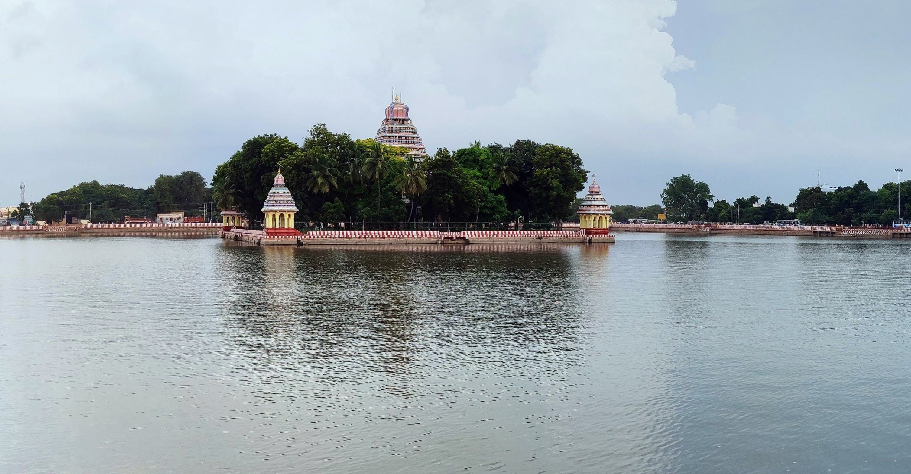

A Trip to the Temple City
28th November, 2021
From a very small age, travel memoirs and adventure accounts have never failed to inspire me. Today, I try to recount a small trip to Madurai as best as I can. Every one knows what covid brought on us, lack of exposure to outside world, no trips, no outings, no dressing ups (anyway no one recognises you in your masks). It was a small journey we undertook just 3 days out of our lives to enjoy.
Traveling – it leaves you speechless, then turns you into a storyteller
To those of you who know the temple city well, apologies! This is a naïve account of a girl who went to the city for the first time. The trip on road started from Coimbatore to Madurai via Trichy. The hills of the Western Ghats were a visual treat ever present from start till end. The occasional water bodies, the curvy roads looking unending, the highway and speeding cars, the snacks, the occasional music of the online classes – These marked the onset of the journey. The return journey marked a small spell of a rain which slightly frenzied us, but went on to diminish without a trace.
Wherever you go becomes a part of you somehow
I found Madurai to be a city just like any other. The dialect of the Tamizh spoken was at first the only thing which made me feel it was different from Coimbatore. Later, I went on to notice other things like the confident vehicles ever waiting for the smallest gap (Sandhu pondhu), the bigger autos which can seat more people, the auto-rickshaw drivers who went on to adopt to technology like Ola or Uber but had a unanimous decision to get more for their pockets, the statues of leaders, the temples, the eateries, the shops and several other things. Of course, my stay was too small to notice other significant or subtle things. The climate was sultry, but definitely manageable. Madurai is a city which gives you an innate sense of Feminism (Stronger women who rule as principal deity).
There’s a sunrise and a sunset every single day, and they’re absolutely free. Don’t miss so many of them

The people whom you are with, decide several things. They set the mood around you. I was really lucky to have incredible friends who made the entire trip so engaging and enthusiastic. The photos taken, the meals shared, the fun, puns and the laughter derived was another highlight of the trip. Of course, the grandeur of the monuments of the great city of Meenakshi Sundareswar is the next topic on the list. We were lucky enough to visit several well-known places like The Meenakshi Amman Temple, Tirumalai Nayaka Mahal and all its glory; the famous Jigarthanda place; boating in the Mariamman thepakulam; along with some parks nearby.
A journey is best measured in friends, not in miles.
The Nayaka Mahal was well maintained with huge and ginormous structures which inspired awe in anyone who visited. The Jigarthanda was so good that I could drink up to “5 big special Jigarthandas” in one go. The Meenakshi Amman temple was so huge and big, with so many deities and lot more stories to look up to. The thepakulam and its rippled waters was sight to behold. It was breath-taking and especially with the lighting after dusk, the whole image of the reflection got etched in my mind forever.
We take photos as a return ticket to a moment otherwise gone.
This was altogether, a gentle reminder to take more such trips to pause from the whirlpools of life and circumstances to observe around you. The fact that we restrict ourselves to a small circle with a radius disproportionate, when compared to the whole wide world, is amusing. Adios mis amigos, until next time!
Isn’t it amazing how much stuff we get done the day before vacation?
Zig Ziglar